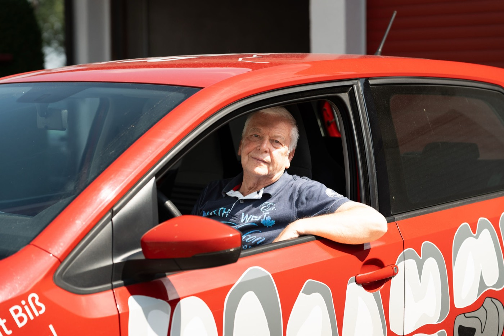

Reparaturen & Service
Reparaturen, Erweiterungen und Unterfütterungen mit kurzen Bearbeitungszeiten und Expressservice. Unser Fahrdienst holt ab und liefert zurück, damit Ihre Praxis jederzeit handlungsfähig bleibt.

- Reparaturen
- schnell erledigtkurze Bearbeitungszeiten
- Anpassungen
- Erweiterungenund Unterfütterungen
- Im Notfall
- Expressservicedamit die Praxis handlungsfähig bleibt
- Logistik
- eigener Fahrdienstdeutschlandweit
Reparaturen & Service in Pforzheim: darum geht es
Neben der Neuanfertigung übernimmt die S. Kiefer GmbH Dentallabor Reparaturen, Erweiterungen und Serviceleistungen schnell und zuverlässig. Der eigene Fahrdienst unterstützt Zahnarztpraxen im gesamten Einzugsgebiet und sorgt für reibungslose Abläufe im Praxisalltag.
Unsere Serviceleistungen
- Reparaturen an herausnehmbarem und festsitzendem Zahnersatz
- Erweiterungen bestehender Versorgungen
- Unterfütterungen
- Expressservice bei eiligen Fällen
- Fahrdienst mit Abholung und Lieferung direkt in der Praxis
Warum sich das für Ihre Praxis lohnt
- Ihre Patienten sind schnell wieder versorgt
- Kein Versandaufwand: der Fahrdienst holt ab und bringt zurück
- Feste Ansprechpartner, die den Fall kennen
Das rote Auto kennt den Weg: Unser Fahrdienst bedient Zahnarztpraxen in Pforzheim, Karlsruhe, im Enzkreis und im Nordschwarzwald bis Freudenstadt, flexibel abgestimmt auf Ihre Abläufe. Weiter entfernte Praxen belieferen wir zuverlässig deutschlandweit, von der Schweizer Grenze bis Berlin.
Auf einen Blick
- Labor: S. Kiefer GmbH Dentallabor, Im Hummelacker 13, 75180 Pforzheim-Büchenbronn
- Seit: 1976, familiengeführt
- Leistung: Reparaturen, Erweiterungen, Unterfütterungen, Expressservice, Fahrdienst
- Übergabe: Scanneranbindung und digitale Datenübertragung, alternativ klassische Abformung mit Abholung durch den Fahrdienst
- Einzugsgebiet: Fahrdienst in Pforzheim, Karlsruhe, Enzkreis und Nordschwarzwald bis Freudenstadt; Lieferung deutschlandweit von der Schweizer Grenze bis Berlin, Mönchengladbach und Leipzig
- Kontakt: 07231 7798200, Mo–Do 8–18 Uhr, Fr 8–15 Uhr
Reparaturen & Service:
was Praxen wissen wollen.
Reparaturen, Erweiterungen und Unterfütterungen erledigen wir mit kurzen Bearbeitungszeiten und Expressservice. Der Fahrdienst bringt die Arbeit direkt zurück in Ihre Praxis.
Ja. Der eigene Fahrdienst holt Arbeiten in Ihrer Praxis ab und liefert sie zurück, in Pforzheim, Karlsruhe, im Enzkreis und im Nordschwarzwald bis Freudenstadt. Weiter entfernte Praxen belieferen wir deutschlandweit.
Reparaturen an herausnehmbarem und festsitzendem Zahnersatz, dazu Erweiterungen bestehender Versorgungen und Unterfütterungen.
Der Fahrdienst gehört zur Zusammenarbeit mit unseren Partnerpraxen. Sprechen Sie uns an, wir stimmen Touren und Zeiten auf Ihre Praxis ab.
Ein Labor für alle Fälle.
Digitale Zahntechnik · Festsitzender Zahnersatz · Herausnehmbarer Zahnersatz · Schienen & KFO · Provisorien